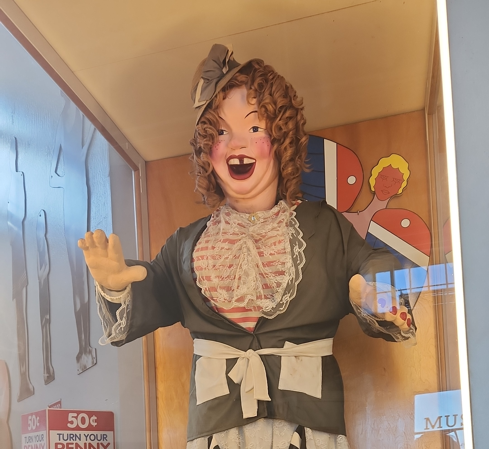

Benjamin R. Villalovas, AKA Rambling Ben

Introduction
I am a student at the University of Wisconsin Green Bay, major: Undeclared.
My Interests
In my free time I enjoy:
- Exercising
- Watching retro anime
- Playing chess online
- Learning about folklore from various cultures
My Travels
I have been to six contaniants and over thrity countries in counting.
I hope to visit Greenland and Guam someday
My Favorite Things
- My favorite color is light blue
- My favorite food is tamales
- My favorite snack is samosa
- My favorite show is "Urusei Yatsura" (1981-1986)
- My favorite book is "The Encyclopedia of Spirits"
- My favorite holiday is Halloween